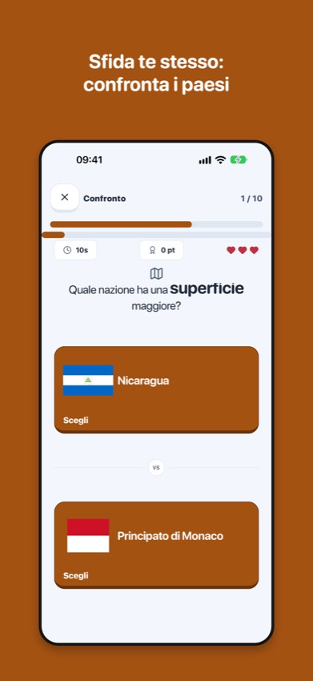

Flags
One country, four answers. Can you recognise it by its flag?
YOUR NEXT JOURNEY IS A QUIZ
Guess flags and capitals, explore the map and collect 250 souvenirs. Join Giro: your next keepsake is just an answer away.
For iPhone · In six languages


A little quiz. A great adventure.
01 / How to play
A flag to recognise, a capital to remember, a delivery to complete. Choose your next stop.
One country, four answers. Can you recognise it by its flag?
From Rome to Tokyo: find the right capital and broaden your horizons.
Which country is bigger? Which has more people? Compare them.
Look at an object, follow the clues and guess where it comes from.
Train your memory and find the pairs, one discovery at a time.
Cross borders on the map and bring the souvenir to its destination.
02 / 250 SOUVENIRS
250 souvenirs to collect: landmarks, animals and objects that tell a place’s story. What will you discover next?


Take on the daily challenge, keep your streak going and come back for daily rewards. Open suitcases and discover the souvenirs waiting inside.
03 / GIROVAGO
Quizzes, challenges and discoveries, always close at hand.




App screenshots in Italian. The game is available in six languages.
To report a problem, include your iPhone model, iOS version and what you were doing. GitHub reports are public; use email for requests containing personal information.